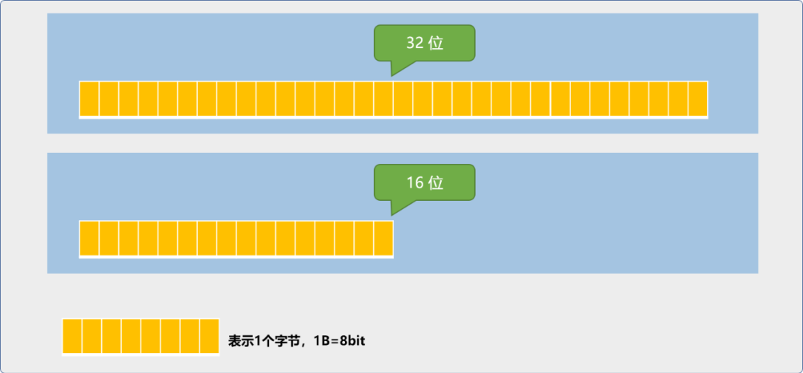
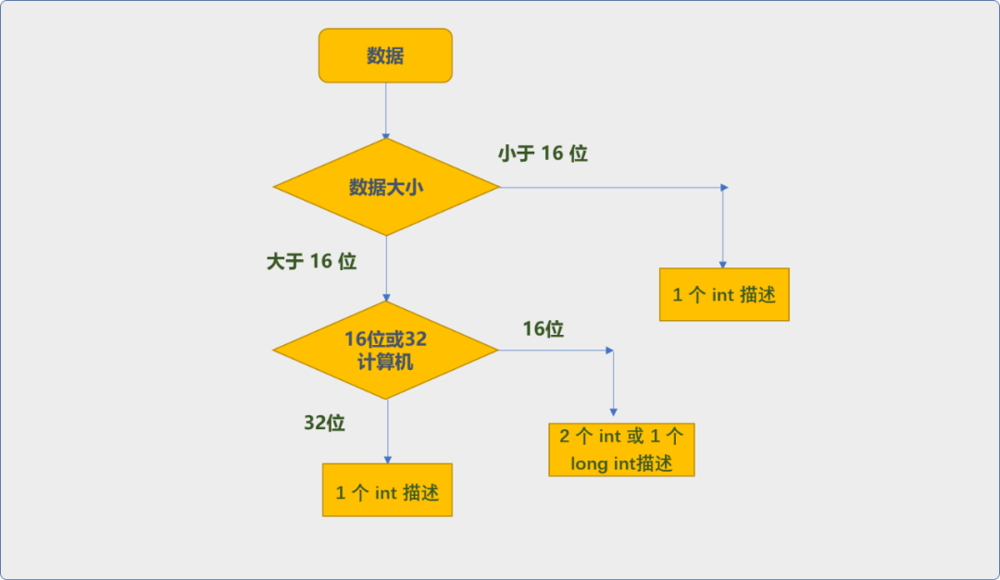
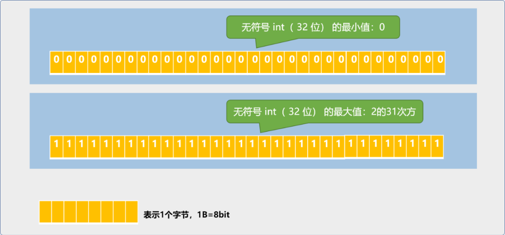
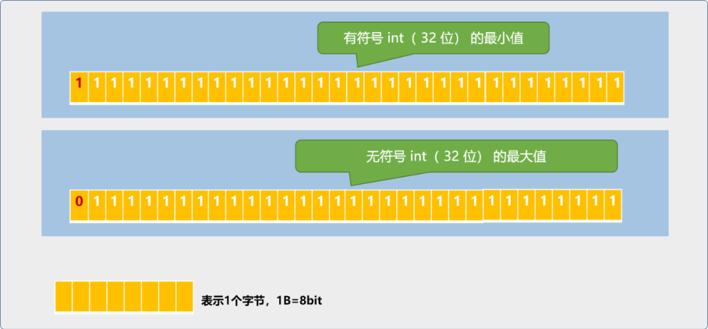

C++ 炼气期之数据是主角
1. 前言
数据在程序中的重要性，怎么强调都不为过，程序的本质就是通过提供数据处理逻辑，把数据从一种状态变成另一种状态的过程。处理逻辑一定是有针对性的，针对的是数据本身的特性。
只有了解了数据本身的内在逻辑含义以及数据间的逻辑关系，才能提供恰到好处的处理逻辑。如，根据面粉的特性适用于制作面包、面条的处理逻辑，并不适合辣条的制作逻辑。
数据是程序的主角，逻辑是程序的剧本。本文将从如下几个方面聊聊C++中的数据这个主角。
- 数据的存储。
- 数据的类型。
- 数据的来源。
2. 数据的存储
谈论数据存储之前，先要知道数据是什么？
数据是计算机世界对现实世界中信息的映射，映射数据的过程也是计算机认知现实世界的过程。
映射还有一个专业概念：数字建模。
认知过程包括：
- 识别： 比如：文字信息还是视频信息或是图片信息或是数字信息……识别过程就是对现实世界中的信息进行分类的过程。因为类型不同，其映射模型将不同、给其分配的剧本（处理逻辑）也不同。
- 采集： 计算机只能识别二进制数据，现实世界中的任一类型信息在计算机中都只能以二进制形式存储，所谓
采集就是把现实世界中的信息以二进制式的形式描述，此过程也称为编码。 - 存储： 以二进制的数据格式存储在计算机中。
数据的存储包含静态存储和动态存储，本文只讲解动态存储，也就是程序运行时是如何存储数据。程序运行时所需要的数据会存储在变量中。
什么是变量？
变量是指位于内存中的一个存储块。这个存储块又是由一个或多个基本存储单元格组成。一个基本存储单元格的大小一般为 1字节（1 B）。
比特
（bit）是计算机的最小存储单位。此单位太小，引入了字节单位，1字节等于8个比特（1B=8bit）。
因存储块中的数据可以根据逻辑的需要随时发生变化，变量一词由此而来。
变量的词义强调了存储块中数据的动态性、灵活性。
什么是变量名？
为了方便访问变量，开发者需要给变量起一个名字，这便是变量名。
当C++运行系统根据开发者的请求指令开辟了存储空间后，便会把变量名和变量进行关联。如此便可以在程序中通过变量名这唯一的变量标识符号访问变量中的数据了。
由开发者提供的变量名，也称为变量的逻辑名。
C++底层机制会建立一张映射表，用来保存变量名和对应存储块的映射关系。
变量名由开发者指定，由系统关联。开发者在给变量命名时，需要遵循变量名命名的语法规则。
变量名命名规则：
- 首字母只能以字母、下划线开头。
- 除首字母之外的其它部分只能是字母、下划线、数字组成。
- 因
C++语言区分大小写，所以NAME和name是 2 个不同的变量名。
变量名命名规范：
如果说规则是法律约束，则规范就是道德约束。规则遵循的是语法标准，不能不遵守，规范遵循的是事实标准。所谓事实标准指行业里的传承或约定。你可以不遵守，但会破坏代码的阅读性和格式一致性。
-
编写
C++程序时，要求变量名遵循骆驼命名法则，如myName。如果变量名由2个以上的英文单词组成，则从第二个英文单词开始首字母大写。 -
还有一点，变量名尽可能能描述其存储的数据的含义。或者叫知名达义，通过名字便能知道变量中数据的含义。
类似于爸爸妈妈给自己的孩子起名字，都会起一个有寓意的名字。
在需要存储数据时，需要向C++运行系统提出变量的申请。这里会有一个常识，申请时需要告之变量的实际使用大小，类似于做衣服时，你对老板说，给我做件衣服，仅这样的信息还是不够的。你必须告诉老板衣服的尺寸，这样老板才能合理使用布料。
那么，申请变量时，如何告诉底层机制你所需的变量的大小？
答案是通过数据类型。
数据类型在声明变量语法中有 2 个作用：
- 确定变量的大小。
- 确定变量中数据的用途。
之于数据类型的具体概念是什么？以及为什么指定数据类型便能让底层运行机制知道开发者所需的变量大小，下文将详细介绍。
3. 数据类型
什么是数据类型？
所谓数据类型，就是计算机世界对现实世界中信息的分类。
为什么要对数据分类？
分类是对数据识别的过程，分类的过程也是了解各种数据特征的过程，只有了解了数据的特性方能拟定行之有效的解决方案。
自动驾驶汽车系统最复杂的地方在于：汽车在行驶过程中要实时对周边的数据进行分类，是石头还是人类还是花花草草或是一只小狗小猫……只有在类别清楚的情况才能给出对应的处理方案。是人，停下来，是花花草草可以开过去，是石块，还要区分其大小。
计算机对现实世界的信息分类越精细，其处理领域以及处理能力会越强。如果人类对化学元素周期表中的元素仅了解其 1/3 ，则人类的科技文明将要远远低于现在的科技成就。
化学周期表中的元素有限，但是可以利用元素之间的关系，进行复合创造。这点很重要。在
C++语言体系中，同样能根据基础分类构建出更复杂的类型，如结构体、类、枚举……
C++把现实世界的信息分为 2 大基础类：
- 数字型数据。
- 非数字型数据。
3.1 数字型数据
数字型数据又分为整型数据和浮点型数据。整型数据通俗理解就是不带小数点的数字，浮点数据可理解为带小数点的数字。
2.1.1 整型数据
C++用 int统称整型数据，又以 int为边界根据数字的范围大小分为：
short int：短整型。long int：长整型。long long int：长长整型。
存储不同类型的数据时，C++会根据类型分配相应的存储空间，导致所描述的数字大小也不一样。
那么！上述各种数据类型所描述的数字范围到底有多大？
C++与其它的高级语言有所不同，如 JAVA中严格规定了 int 为 4 个字节大小。但是 C++标准中对 int只做了一个抽象规定，其描述的数字范围大小与机器字相同。
int是一个机器字。short int是半个机器字。long int是1或2个机器字。long long int是2个机器字。
机器字，就是计算机的运算单元在单位时间内能处理的数据位数。如我们经常会说
16位处理器，32位处理器。
16位处理器单位时间内能处理16位也就是2字节的数据。
32处理器单位时间内能处理32位也就是4字节的数据。
所以，同一个程序，运行在不同的计算机平台上时，int 所能描述的数据范围是不一样的。现假设本程序运行在 32 位的计算机上，在编写如下变量声明以及赋值代码时，请注意其中的细节。
- 默认情况下，所有数字字面常量都是
int类型。如下常量34就是int。数字字面值默认情况下十进制格式，也可以使用八进制或十六进制度。
- 在使用
short int保存数据时，不要保存超过short int类型描述的数字大小。如下是正确的。在32位处理平台上，short int能保存的数字范围是-32768~32767。23在这个范围之内。
如下是错误的赋值操作，因为常量 100000已经超过了 short int描述的数字范围。
- 使用
long int时，如果存储的数字没有超过long int所描述的范围，可以直接赋值，如下是正确的。
最好在数字后面添加 L或l后缀。根据测试，编写本文时测试代码用的计算机上的 long int和 int描述的数字范围是相同的，都是 4 B。
- 使用
long long int时，请在赋值的数字后面添加后缀LL和ll。经过测试，本机long long int是8 B。当然如果不指定LL特定描述符，C++也能自动转换。
因 int 类型大小的不确定性，C++程序在跨平台使用时，存在移植问题。
什么是移植问题？
这里必然会出现一个问题，我在 32 位计算机编写程序时，使用 int 描述了一个32 位的数据。如果让此程运行在 16 位的计算机上，则会出现编译无法通过或丢失数据的情况。
类似于我在一家银行存储物件时，此银行给了我
4个存储柜用来存储我的物件，我也把4个柜子存满了。转到另一家银行时，人家说最多只能给我
2个柜子，这肯定是存不下我所有的物件，会发生数据丢失。如果情形反过来，倒没有多大影响。

问题出现了，必然是要解决的，一种解决方案就是程序级解决，在编写程序时，获取到程序运行时的计算机的机器字，然后根据计算机的机器字采用不同的数据类型存储。

在程序逻辑中，还要随时获取到底层硬件的工作状态，这与高级语言的理念相矛盾，且增加了开发者的负担，且易出现忽视的地方，导致程序在移植时 bug满天飞。
当然，C++也可以让开发者可以统一使用 int描述数据，在编译器中，由编译器根据计算机的机器字，然后采用是否拆分存储的方案。也就是把上述逻辑由开发层面移到编译器层面。
这是常规解决方案，但是会增加编译器的工作负担，影响编译的速度。
另一种解决方案，C++在语法层面提供了明确描述数字范围的类型关键字，可以由开发者根据自行选择。这样在语法层面和编译层面有了统一的协议，编译器不需要进行条件判断。
__int8：表示8位。__int16：表示16位。__int32：表示32位。__int64：表示64位。
有符号和无符号的问题：
默认情况下，int是有符号，意味着可以存储正数，也能存储负数。如下 2 行代码的语义是一样的。
如果需要表示无符号的整型数据类型，则需要使用 unsigned 关键字。使用此关键字后变量中不能存储负数。如下代码从语法上没有错误，但是，从变量 num_1并不能获取数据 -34，而是垃圾数据。
C++语言有一个让让人头大的地方。如下代码，很明显，
1000000000098788已经远远超过了int描述的范围，语法上没有任何提示，并且能正确编译运行，只是从变量num_3中获得的数据是垃圾数据。
C++的语法较为宽松，编译器较"圆滑"，一切就靠开发者自己步步惊心了。可以说是缺点，但也是优点，正因为不设防，才能让其编译速度较快。
无符号数据可以在数据中添加 u或 U作为无符号数据的标识符号。
有符号 int和无符号 int 所表示的数字范围并不相同。32系统中，无符号 int 类型范围如下图,也就是 0~4294967295。

unsigned int num_1=4294967295;
unsigned int num_2=num_1+1;
cout<<num_1<<endl;
cout<<num_2<<endl;
return 0;
//输出结果
4294967295
0
int类型默认是有符号，只是省略signed ，在 32 位的平台上， int的范围是-2147483648~2147483647。
在有符号描述中，最高位并不表示有效的数据位，而是标志位：

- 当此位置设为
0时，表示存储的是正数。
最大值求解表达式：1X230+1X229……1X20=2147483647
- 当此位置设为
1时，表示存储的是负数。
最小值的求解可理解为无符号位的最大值减去有符号位的最大值再取反，-（4294967295-2147483647）=-2147483648。
2.1.2 浮点数据
浮点数据指带小数点的数据，C++用 float 和double表示浮点数据类型。
float表示单精度浮点数据。C++标准约定float的有效位是一个机器字（32位平台是32位）。double表示双精度浮点数据。C++标准约定double的有效位是2个机器字（32位平台是64位）。double还有一个兄弟：long double，其有效位至少应该和double大小一样（可以是80、96、128位）。
什么是有效位？
有效位指数据中的有意义的位数。
- 如数字
14567其有效位为5位。 - 如数字
14500，则有效位为3，后面的0为被认为是占位符，不计算到有效位中。 - 如
245.89有效位也是5。有效位与是否有小数点以及小数点位置无关。
默认情况下，字面浮点常量是double数据类型。如下的 34.0就是double类型。
站在数学的角度，
34.0后面的0是没有意义的，但是C++依然把它当成浮点数字。
在浮点常量后面添加f或F后缀。则表示为 float数据类型。
在浮点常量后面添加L后缀，则为 long double数据类型 。
当浮点型常量后缀f、F、l、L时，只能用在十进制开式中。C++在描述浮点型数据时，还可以使用科学计数法开式。科学计数法指数字中带有指数表示方式。
如下代码，表示的是 3*102
这里
2称为指数，3称为尾数。
如下代码，表示的是 3.4*10-2
在计算机底层，存储整型数据和浮点数据的方式是不同的。整型数据可以直接存储，浮点数据则是将数据分成 2 个部分分别存储。
- 一部分用来存储数值。
- 一部分用来存储放大或缩小因子。
举一个例如，保存 3.457 十进制时，可以分成下面 2 个部分保存 ：
- 保存数值
3457。 - 缩放因子
1000。
当读取数据时，通过缩放因子缩小数值，就能得到 3.457。缩放或放大因子的作用是移动小数点的位置。上面是以十进制为例子说明问题，事实是计算机底层以二进制存储，缩放因子是以 2 为幂。
正因为小数点可以移动，所以称这类数据为浮点类型。
但是要知道，原理是这么一回事，而事实是浮点数据的底层存储结构要比整型存储结构复杂的多。
3.2 非数字类型
C++非数字类型有 char和bool。
3.2.1 字符类型
char用来表示单个字符或小整数，char常量需要使用单引号括起来。
计算机能直接存储数字类型数据，只需要把数字转换成二进制便可。计算机不能直接存储字符，所以需要遵循一种统一的标准，把字符转换成一个数字后再存储，这个过程叫字符编码。
计算机最早使用的是 ASCII编码标准，主要是用于编码英文中使用的字符。因英文字符并不多，所以 1B的存储空间就够用了，C++最初对 char类型的存储标准就是 1 字节的存储空间。
但对于其它国家的语言来讲，则远远不够，默认情况下，char是不能存储中文字符的，因为中文至少需要 2 个字节的存储空间。
中文编码标准有
gb2312、GBK， 这2种标准仅只能对中文字符编码。另有国际统一的
uncode标准，用来对全世界所有语言的字符进行统一编码。
如下的代码看似能存储，但其真正存储的是一个垃圾数据。正如前文所说，C++并不会在语法层面 检查数据是否合理，编译器采用原则是能存储存则存储，不能存储就存储能存储的一部分。
C++还有一种 wchar_t 字符数据类型，叫宽字符类型，其存储大小为 2 字节。
另C++ 11标准中还有 char16_t 和char32_t类型描述，主要支持 unicode编码标准，都是无符号类型。字面意思便能知道一个支持16位存储，一个支持32位存储。
无符号字符型
char在默认情况下既不是没有符号，也不是有符号，因为并没有编码为负数的 ASCII字符。算是留了一个可扩展余地。
C++有无符号的字符类型（unsigned char），其取值，除了包括 ASCII码表上的所有字符外，还包括一个扩展 ASCII码表上的字符。扩展字符指通过键盘无法输入的字符。但可以通过字符与整数的关系，来初始化或赋值无符号字符型变量。
有符号和无符号char所表示的范围是不相同的：
signed char表示范围为-128~127。unsigned char表示范围是0~255。
3.2.2 bool类型
bool类型用来表示true和false。在C++中可以把非零值当成 true。零值当成 false。
4. 数据的获取
程序中数据的源头有多种途径：已知数据，交互数据，数据库中数据、网络数据、文件中的数据……
已知数据，指直接出现在程序中的字面数据，也称为常量数据，可以直接参与到运算中，一般用来赋值。
交互数据，也称为输入数据。在程序运行时，通过交互机制获取到用户输入的数据。
C++通过 cin和重定向指令完成交互数据的获取。
如果要获取数据库中的数据则需要依靠数据库驱动 API。要获取到文件中的数据则需要使用文件读写API，需要网络上数据则需要网络相关的API。这已经超过本文要聊的主题，大家可以查阅相关文档。
5. 总结
本文试图从数据的存储、数据的类型、数据的源头上讲解数据的本质。程序这个剧本要开始，数据这个主角先要到位，对数据的了解多少，决定了逻辑的精彩度。
本文内容虽然很基础 ，但尤为重要，基础建设是否牢固决定了高层构建的高度。